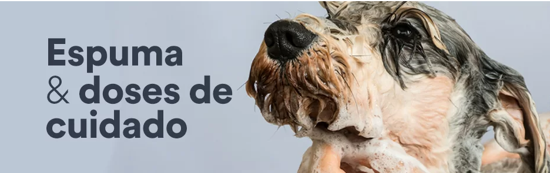
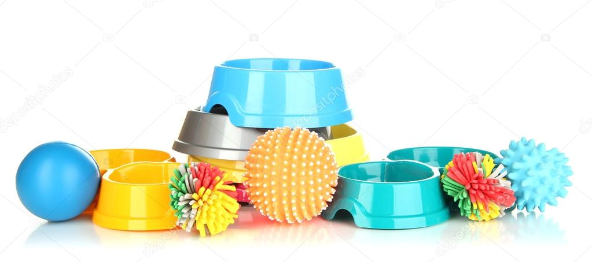

| Home | Raçoes | Tosa | Veterinaria | Acessorios | Localização | Contato |

|
RAÇÃO PARA CACHORROTodos os tutores fazem o possível para garantir a saúde e a qualidade de vida dos cachorrinhos. Por isso, é fundamental oferecer uma ração rica em componentes nutricionais para garantir todo o bem-estar e a felicidade dos nossos amigos de quatro patas. |
|  |
Banho e TosaTemos uma equipe altamente qualificada e apaixonada por pets pronta para atender todas as necessidades dos animais e seus tutores. |

|
VeterinariaMesmo com todos os cuidados que proporcionamos aos cãezinhos, pode acontecer de eles ficarem doentes ou terem a necessidade de suplementos. Nesse caso, só uma alimentação balanceada não é suficiente, sendo necessário recorrer a opções como o remédio para todos animais. |
|  |
AcessoriosLiberar os instintos dos felinos pode ser muito mais fácil com um arranhador para gatos. Esse acessório incrível para o dia a dia do bichano proporciona muitos benefícios a ele! É importante oferecermos um cantinho especial da casa para nossos animaizinhos. Assim, após um dia de divertidas brincadeiras e atividades, nossos pets podem descansar e repor suas energias. Para garantir um lugar tranquilo para o peludo, adquira uma ótima casinha de cachorro. |